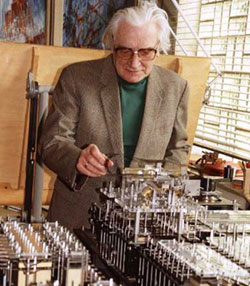

À l'époque, Zuse ne fit aucune communication scientifique à ce sujet, pour diverses raisons
: la Seconde Guerre mondiale faisait rage, et il consacrait tous ses efforts à la conception
et à la commercialisation de son ordinateur, le Zuse 3.
La première publication mentionnant Plankalkül date de 1948. En 1975, il fut décrit et
implémenté à l'occasion de la thèse de J. Hohmann. Le premier compilateur, proposé par
l'université libre de Berlin, a été achevé en 2000, soit cinq ans après la mort de Zuse.